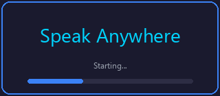

What it does
Dictate into anything
Tap the mic and talk. When you finish a phrase, the words are typed into whatever window has focus: email, a document, a chat box, a form.
Hear any text
Copy text and tap Speak Clipboard. It starts talking on the first sentence instead of waiting to render the whole thing, at 0.5x, 1x, 1.5x or 2x.
Stays on your machine
Recognition, voice detection and speech all run locally. After the one-time model download, nothing goes over the network.
Who it's for
- People who find typing slow, tiring or painful and would rather talk.
- People who take in text better by listening: long emails, articles, their own drafts read back for proofreading.
- Anyone who wants dictation and read-aloud without sending their voice or their text to a cloud service.
- Offline or locked-down PCs where cloud speech tools are not an option.
Note: compatibility with screen readers such as NVDA, JAWS or Narrator has not been tested. TODO-VERIFY
Key features
Accurate recognition with punctuation
Uses NVIDIA's Parakeet TDT 0.6B v2 model, full precision, which produces sentences with capitals and punctuation on its own. You can still say "period", "comma" or "new line".
Ignores room noise
Silero voice activity detection decides what is speech, so keyboard clatter and background noise never reach the recognizer.
Nothing you say gets dropped
Decoding runs on its own thread, so words spoken during a decode are kept. Turning dictation off finishes what is queued first, so your last phrase still lands.
15 graded voices
Kokoro-82M voices, American and British, limited to the ones Kokoro's own voice list grades A or B. A separate Voice Picker lets you hear each one and keep your favorite.
Gapless streaming reader
Text is read in chunks that grow as it goes, rendered ahead into a small queue and played through one continuous audio stream. Stop takes effect within 0.2 seconds.
Uses your real devices
Microphone and speaker menus list only devices Windows can actually open, and start on the ones Windows is already using.
Opens fast
The window opens while the recognizer loads in the background, and the microphone starts buffering right away so early words are not lost.
No settings to tune
The app picks its own thread count for your processor, about half the logical cores, limited to between 2 and 8.
Measured numbers
From the project README, measured on an 11th-gen Intel Core i7-1185G7 laptop (4 cores, no discrete GPU), comparing the current build to the earlier Vosk-based build.
| What | Before | Now |
|---|---|---|
| Window on screen | 129.5 s | 2.6 s |
| Dictation ready | 129.5 s | about 5 s |
| First word of a long read | 77 s | 1.2 s |
| Memory | 9.6 GB | 2.3 GB |
Your times will vary with your CPU and disk. Text appears after each phrase you finish, not word by word.
Screenshots

TODO-VERIFY: the repo has no screenshots of the main window or the Voice Picker. Add PNGs of both before sending this out.
Privacy
There is no separate privacy policy in the project yet (TODO-VERIFY: link one if it exists). This summary describes what the code does.
- Speech recognition, voice detection and text-to-speech run locally on your CPU.
- The only network use is the first-run download of the speech models from Hugging Face and the sherpa-onnx GitHub releases page.
- No account, no sign-in, no API key, no analytics code.
- Audio from your microphone and text from your clipboard are processed in memory and are not uploaded anywhere.
- On disk it keeps the models in
%LOCALAPPDATA%\SpeakAnywhere\modelsand small settings files, such as your chosen voice, in%APPDATA%\SpeakAnywhere.
FAQ
Does it need the internet?
Only once, the first time it runs, to download about 3 GB of models with a progress bar. After that it runs offline. If the download is cut off, finished files are kept and the one in progress starts over.
Do I need a graphics card?
No. Everything runs on the CPU.
Is there a Mac, Linux or phone version?
No. It is Windows 10 and 11 only.
Why does Windows say it "protected your PC"?
The download is not code-signed yet. Click More info, then Run anyway.
Does text appear while I'm still talking?
No. It transcribes each whole phrase, so text lands a second or two after you finish speaking. That is the tradeoff for the accuracy.
Can I change the voice?
Yes. Open Voice Picker.exe from the same folder, click a voice to hear a sample, then Use this voice. The default is Michael.
What does it cost?
The Windows download is free from the project's GitHub releases page.
Built on
Speak Anywhere is the app around these open models and libraries, which are their authors' work: NVIDIA Parakeet TDT (speech recognition), Kokoro-82M (voices), Silero VAD (speech detection), sherpa-onnx (runtime), Piper (alternate voices, source build only), PyAutoGUI, PyAudio, sounddevice, Tkinter, OpenCV and Pygame.